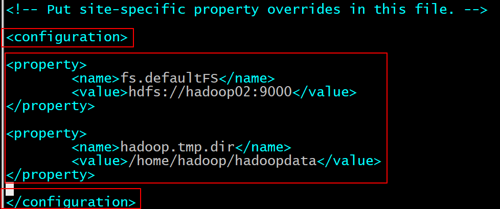

1、伪分布式hadoop集群搭建的步骤：
首先要确保所有服务器的登录用户是hadoop用户，而不是root用户！！！！！
安装步骤：
1）获取软件安装包
2）规划安装目录，然后加压缩安装包到对应的安装目录
3）修改配置文件 + 配置环境变量
4）初始化，启动，验证
详细步骤：
（1）规划安装目录
比较通用的安装目录：/opt /usr 当中
但是为了给新人避免权限问题，直接规划安装目录就是当前用户的主目录当中的apps目录
在secureCRT 的send chat to all sessions窗口给所有服务器在家目录下创建两个新的文件夹：apps和data
mkdir /home/hadoop/apps
mkdir /home/hadoop/data
（2）获取软件安装包（该Hadoop安装包是用centos编译过的） hadoop-2.7.4-with-centos-6.7.tar.gz
在SecureCRT按 alt+p 键进入SFTP文件传输界面
sftp> put d:/暑假Hadoop/软件/hadoop-2.7.4-with-centos-6.7.tar.gz
（3）解压缩
安装目录： /home/hadoop/apps
tar -zxvf hadoop-2.7.4-with-centos-6.7.tar.gz -C /home/hadoop/apps
（4）修改配置文件 （修改配置文件的作用可见附录：附录1 Hadoop 的配置文件修改的含义）
修改配置文件最好将当前工作目录先cd到配置文件的目录：
cd /home/hadoop/apps/hadoop-2.7.4/etc/hadoop
1）vim hadoop-env.sh
找到JAVA_HOME变量后，将后面的值改为如下形式
export JAVA_HOME=/usr/local/java/jdk1.8.0_73
2）vim core-site.xml
找到 <configuration>
</configuration> 配置标签
在里面添加如下属性：
<property>
<name>fs.defaultFS</name>
</property>
<property>
<name>hadoop.tmp.dir</name>
<value>/home/hadoop/hadoopdata</value>
</property>
如图所示：（接下来的hdfs-site.xml、mapred-site.xml、yarn-site.xml三个文件也是如此法炮制）

3）vim hdfs-site.xml
找到 <configuration>
</configuration> 配置标签
在里面添加如下属性：
<property>
<name>dfs.namenode.name.dir</name>
<value>/home/hadoop/hadoopdata/name</value>
</property>
<property>
<name>dfs.datanode.data.dir</name>
<value>/home/hadoop/hadoopdata/data</value>
</property>
<property>
<name>dfs.replication</name>
<value>2</value>
</property>
<property>
<name>dfs.secondary.http.address</name>
<value>hadoop03:50090</value>
</property>
4）cp mapred-site.xml.template mapred-site.xml
#配置文件库里本身没有mapred-site.xml文件，但有它的模板文件mapred-site.xml.template。所
#以先cp一份并重命名
vim mapred-site.xml
找到 <configuration>
</configuration> 配置标签
在里面添加如下属性：
<property>
<name>mapreduce.framework.name</name>
<value>yarn</value>
</property>
5）vim yarn-site.xml
找到 <configuration>
</configuration> 配置标签
在里面添加如下属性：
<property>
<name>yarn.resourcemanager.hostname</name>
<value>hadoop04</value>
</property>
<property>
<name>yarn.nodemanager.aux-services</name>
<value>mapreduce_shuffle</value>
</property>
6）指定从节点
vim slaves
删除localhost字段
并添加所有的从节点的主机名如下形式：
hadoop02
hadoop03
hadoop04
hadoop05
（5）配置环境变量(配置环境变量的好处当然是快速使用一些hadoop相关的命令,就跟Windows中配置环境变量一样)
当前安装hadoop的用户是hadoop, 所以配置的环境变量是hadoop用户变量，root用户和普通用户（hadoop）配
置环境变量的目录分别如下：
root ： /etc/profile
普通用户（如hadoop用户） : ~/.bashrc ~/.bash_profile 两个目录均可
我们选择 .bashrc 文件来配置环境变量。
vim /home/hadoop/.bashrc
在末尾添加如下两行：
export HADOOP_HOME=/home/hadoop/apps/hadoop-2.7.4
export PATH=$PATH:$HADOOP_HOME/bin:$HADOOP_HOME/sbin
配置完成后记得重新加载配置文件:
source /home/hadoop/.bashrc
hadoop的生态体系各组件的环境变量如下:(需要注意的是hadoop配置了两个命令文件夹的路径,一个bin一个sbin,而
生态体系的其他组件的只有一个命令文件夹bin)

（6）将当前服务器配置好的hadoop安装目录文件以及配置好的环境变量，在secureCRT 的send chat to all sessions窗口，
分发给其他所有服务器
scp -r hadoop@hadoop02:/home/hadoop/apps/hadoop-2.7.4/ /home/hadoop/apps/hadoop-2.7.4/
scp -r hadoop@hadoop02:/home/hadoop/.bashrc /home/hadoop/.bashrc
source /home/hadoop/.bashrc
（7）初始化
记得，只在“指定为hdfs主节点（namenode）的节点”进行初始化（根据上面的配置文件，这里的hdfs主节点是hadoop02，所以，只需在hadoop02执行以下命令）
hadoop namenode -format
初始化成功的标志是如图红行：
若初始化不成功，则再次执行命令：hadoop namenode -format 直到初始化成功。记住，初始化命令执行
成功后不要再去执行，否则hadoop集群又会变成一个全新的集群，里面储存的用户数据全部会被清空
初始化成功后，hdfs主节点 /home/hadoop/hadoopdata/name/current 目录下会有如下四个配置文件
-rw-rw-r-- 1 hadoop hadoop 323 Nov 28 10:33 fsimage_0000000000000000000
-rw-rw-r-- 1 hadoop hadoop 62 Nov 28 10:33 fsimage_0000000000000000000.md5
-rw-rw-r-- 1 hadoop hadoop 2 Nov 28 10:33 seen_txid
-rw-rw-r-- 1 hadoop hadoop 207 Nov 28 10:33 VERSION
（8）启动集群
启动HDFS集群： start-dfs.sh
最好在HDFS 上的主节点启动 HDFS，其实在哪里启动并无关系，但为了方便记忆，最好在主节点上启动。
第一次启动时要不断输入yes，一直输入到跳出输入框为止
启动成功的界面如下图所示。虽然第一次启动后的样子和这个不太一样，但也应该包含这些行，否则可能有些节点没有启动成功。启动成功后，下次再启动时画面应该和这个一模一样

启动YARN集群： start-yarn.sh
只能在 YARN 主节点启动 YARN。要求在 YARN 主节点进行启动，否则 ResourceManager 主进
程会启动不成功，需要额外手动启动。第一次启动时要不断输入yes，一直输入到跳出输入框为止
启动成功的界面如下图所示。虽然第一次启动后的样子和这个不太一样，但也应该包含这些行，否则可能有些节点没有启动成功。启动成功后，下次再启动时画面应该和这个一模一样

如果需要，假设有某个节点没有启动成功，则需要用到启动某个节点的某个进程的命令，启动hdfs节点和yarn节点的
命令分别如下：（注意：要启动哪个节点的某进程，就要到哪个节点去执行命令）
hadoop-daemon.sh start namenode/datanode
yarn-daemon.sh start resourcemanager/nodemanager
下图是所有节点的相应进程都完美启动时的样子：

（9）验证集群是否安装、启动正常
1）检测进程是否正常 ：jps
2）检测web页面是否正常：
hdfs 集群信息 web 管理界面地址： http://hadoop02:50070
mapreduce 运行状态信息 web 管理界面： http://hadoop04:8088
3）做一个简单的使用
a、上传文件到hdfs集群：hadoop fs -put filepath destpath （用于测试hdfs集群是否能正常使用）
如将hadoop02中的hadoop的安装包上传到hdfs集群的根目录下:
也可以直接写成：
hadoop fs -put hadoop-2.7.4-with-centos-6.7.tar.gz /
说明不带前缀 hdfs://hadoop02:9000 也是可以的，结果都一样。hdfs的文件系统和linux的文件
系统使用规则是一样的，可以放心使用。
b、运行一个MapReduce的jar包来求圆周率PI（用于测试yarn集群是否能正常使用）
cd /home/hadoop/apps/hadoop-2.7.4/share/hadoop/mapreduce
hadoop jar hadoop-mapreduce-examples-2.7.4.jar pi 3 3
在结尾能得出结果说明正常
2、Hadoop 的配置文件修改的含义
Hadoop 的配置文件位于 hadoop-2.6.5/etc/hadoop/ 文件夹中，需要修改的配置文件的信息的含义如下
（1）修改 hadoop-env.sh 配置文件，添加 jdk 安装目录配置：
找到export JAVA_HOME这一行，将${JAVA_HOME}改成/usr/local/java/jdk1.8.0_73，也就是把jdk的安装路径
放过来，这个路径在 /etc/profile 里已经配过一次，（也就是root用户已经改过了，现在改的是hadoop用户的）
可以去那里找到对应的JAVA_HOME变量，找到对应的路径值。


（2）修改 core-site.xml：

（3）修改 hdfs-site.xml：

（4）修改 mapred-site.xml

（5）修改 yarn-site.xml

（6）修改slaves
这个文件的作用仅仅是用来给start-dfs.sh 和 start-yarn.sh 标识当前集群的从节点的列表，好让这两个
命令在执行的过程当中，能够自动的把对应的所有从节点上的进程都能够启动起来
如果配置了slaves文件的内容，那么就可以通过这两个命令直接启动整个集群的所有进程；如果没有配
置，那就表示，所有的进程都必须手动启动

3、重复安装
（1）方法一：再初始化一遍（记得初始化要在hdfs的主节点，也就是运行NameNode的服务器）
hadoop namenode -format
因为集群搭建成功后，初始化只需要做一次, 也不用关心hadoopdata 是否存在。所
以如果又做了一次，就相当于重装了一次。
（2）方法二：如果还想要更加彻底一些的重装，最快的方法是：
rm -rf /home/hadoop/hadoopdata
再初始化一遍：
hadoop namenode -format
因为集群的安装目录是： /home/hadoop/apps
数据目录是： /home/hadoop/hadoopdata
/home/hadoop/hadoopdata/name
/home/hadoop/hadoopdata/data
而既然集群已经使用过，那么说明安装目录一般是没什么问题的，配置文件也完好。那么只需要删除
所有的数据目录即可达到快速重装的目的。
（3）方法三：删除所有，按照从无到有重来一次。（参照上文1、全分布式hadoop集群搭建的步骤：）
rm -rf /home/hadoop/hadoopdata
rm -rf /home/hadoop/apps/hadoop-2.7.4
4、hdfs架构图

5、蒙特卡洛算法求圆周率PI的思想
6、启动MapReduce程序的历史任务服务器：(随便在哪个节点启动）
mr-jobhistory-daemon.sh start historyserver
启动后，以后所有在集群里跑的MapReduce程序的记录全部会被记录下来，不会丢失。否则，过一段时间后MapReduce所跑的程序的记录会随着时间的推移会被系统删除。并且，最好每次将历史任务服务器在同一个节点启动，不然每次在不同的节点启动的话会造成数据的迁移。

————————————————————手写与上传资料分割线—————————————————
HDFS集群的第一个问题： SPOF
HDFS 的核心
HDFS的架构 ： 主从架构 --- 一主多从 --- 单点故障问题
HDFS的namenode节点千万不能死。 整个HDFS集群都不能对外提供服务
单点故障：当集群中的一个节点宕机之后，就造成了整个集群不可用。
保证一个HDFS集群始终都能有一个active namenode ：
1、namenode运行的时候，因为会接受所有的客户端的读写数据（上传 和 下载）的请求
任意时刻，无论哪个客户端发送请求，都得保证有namenode去处理
2、假如在正常使用过程当中，如果namenode宕机，最合适的方式，肯定是找一个替代品
active namenode 运行着 正常的运行，能够接收所有客户端的请求进行
共享存储系统（元数据）（生命力非常的顽强）
standby namenode 运行着 但是不接受任何客户端的任何请求，仅仅只是等待active namenode的宕机
namenode是 HDFS 集群的管理节点
掌握这整个HDFS集群的关键核心数据（元数据）
ZooKeeper
1、确保整个HDFS集群中，始终只有一个namenode (选举算法)
脑裂 brain-split
2、ZooKeeper实现了一个非常优秀的共享系统
用来存储所有的 anmenode的元数据
HDFS集群的HA
问题：
1、zookeeper是什么架构？ 它能不能是主从架构？
2、Cassandra跟hbase， 数据库
hbase ：主从架构
Cassandra ： 无主架构
HDFS集群的第二个问题：压力问题
HDFS ： 主从架构
HDFS的主节点：namenode ： 接收和处理所有客户端的读写数据请求
如果集群超大。 如果只有 一个namenode的话， 很多明显。这个namenode会很累
1、请求的量非常大
2、假如一个客户端要上来进行文件下载。
有一个200T的文件存储在HDFS集群中，如果要进行下载，怎么保证该客户端能够迅速的找到对应的这个200T 文件的所有数据块都存储在那些服务器里面?
客户端要寻找的关于这些所有数据块都分布在那些节点的数据都是 元数据
就是发请求 去 请求namenode告诉客户端 所有数据块的位置
数据的存储方案：
1、磁盘 ： 为了安全
2、内存 ： 为了效率
在nemnode节点的内部： 所有的元数据
在内存当中存储了一份完整的， 就是为了保证所有的客户端都能迅速的寻找到任何文件的元数据信息
1、nameonde中的每一条元数据其实就是一个数据块的信息， 150KB
16W * 0.15M = 24000 M 24G
128G 的内存： 1PB
2、当namenode节点的内存不足以存储下所有的元数据时。那么怎么解决这个问题？
1、加内存
2、一个namenode存不下，使用多个namenode去存
active namenode 和 standby namenode的状态一模一样。 元数据是一模一样
first anmenode 和 second namenode 的状态都是acitve ，元数据不一样。
联邦机制
first namenode 管理 第一个块池中的所有数据块的元数据信息： BP-2344
second namenode 管理 第二个块池中的所有数据块的元数据信息： BP-2355
联邦机制(namenode之间是兄弟关系)
1、如果不能交叉，那就意味着，物理界线 就是两个完全独立的集群
2、如果能交叉。 每个datanode都可以为不同的namneode去存储元数据。
怎么区分这些数据块到底是属于那个namenode ?
靠 块池
在联邦集群中，每个namenode也得做高可用配置
hadoop的集群架构：
1、单机模式
2、分布式
主从架构
HA集群
联邦集群
设计 存储系统 的时候 一定要兼顾 计算
设计 计算模型 的时候 一定要兼顾 存储
逻辑概念
物理概念
逻辑切分
物理切分
抽象--逻辑 HDFS 分布式文件系统 抽象的文件 逻辑系统
架构在多个不同的linux文件系统之上
而仅仅是包含我们配置的那个目录： /home/hadoop/hadoopdata/data
数据块 + 副本
如果A和B 都不足128M ， 并且就算加起来也不足128M ， 他们也不会被存为一个数据块
一个数据块一定是属于某个一个特定文件的
一个文件被切分的时候，只有当他超过规定的切块大小的时候才会被切分。
如果一个文件就是小于规定的数据块的大小，那么就存为一个单独的数据块
如果一个文件file1是100M , 那么现在你告诉我：这个数据块blk-01到底是占用128M的空间，还是100M的空间？ 100M
HDFS的设计者：
HDFS的存储机制里面； 归档 + 压缩
mongodb ：文档数据库
mysql : 关系型数据库
redis ： 数据结构数据库
memcached ： key-value数据库
hbase ： 列式存储的NoSQL数据库
neo4j : 图数据库
最短寻路算法
大量的小文件： mongodb
音乐网站： .mp3
图片服务器 ： 图片的查询 和 存储
QPS : query per second
EB---PB -- TB --GB ---MB ---KB